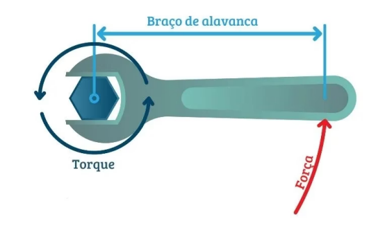
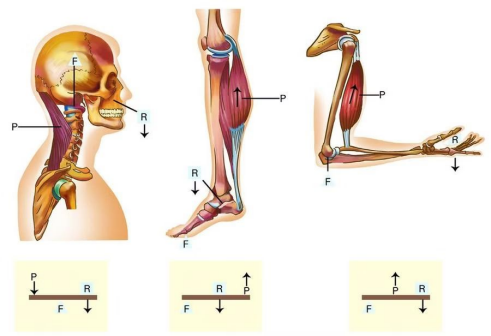
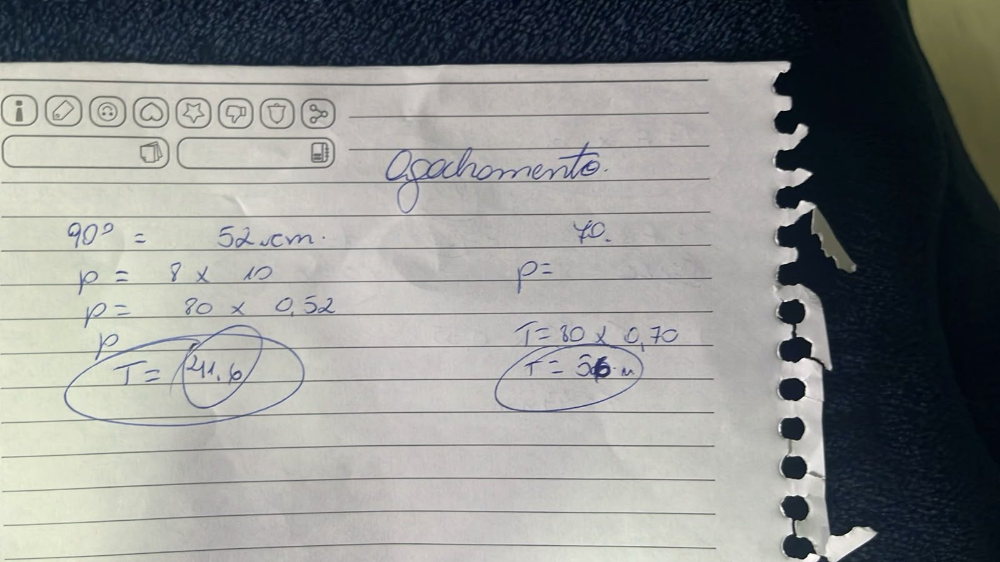

Aula 1
Aula teórica
Introdução à Biomecânica
Primeiro encontro da disciplina. O professor Rafael apresentou o plano de ensino, o laboratório onde serão feitas as aulas práticas e a forma de avaliação. Depois entramos no conteúdo: o que é a biomecânica e onde ela é aplicada.
Apresentação da disciplina
A disciplina junta mecânica, anatomia e fisiologia para analisar o movimento humano, com ênfase na análise cinética e cinemática. As aulas práticas acontecem no laboratório de musculação e biomecânica da Unidavi, que tem aparelhos de musculação, plataformas de força e recursos para análise do movimento.
- Carga horária
- 30 h/a Terapia Ocupacional
- Bloco 1
- Cinética e prática 50% teórico e 50% prático: as forças no movimento e exercícios supervisionados em laboratório.
- Bloco 2
- Análise por vídeo 100% prático: filmagem, análise e discussão de exercícios reais com ferramentas digitais.
Avaliação: três notas com o mesmo peso. (1) criação de um site ou portfólio com o conteúdo de todas as aulas, de forma organizada e didática (é este aqui); (2) uma avaliação teórica; (3) um seminário final com a análise de exercícios usando as ferramentas vistas no semestre. Todas as aulas devem ser registradas, e a participação ativa conta na avaliação contínua.
Contexto: o que é a biomecânica
Biomecânica é a ciência que aplica os princípios da mecânica ao estudo do movimento dos seres vivos. Ela combina física, anatomia e fisiologia para entender como as forças internas (músculos, ligamentos) e externas (gravidade, cargas, o chão) agem sobre o corpo, tanto parado quanto em movimento.
- Mecânica: estuda as forças que agem sobre os corpos e os efeitos que elas produzem.
- Estática: o corpo em equilíbrio, parado ou em velocidade constante.
- Dinâmica: o corpo em movimento acelerado.
- Cinemática: descreve o movimento (posição, velocidade, aceleração) sem olhar para as forças.
- Cinética: estuda as forças que causam o movimento.
A biomecânica olha para a estrutura (ossos, articulações, músculos, tendões) e para a função (como essas estruturas se movem e suportam cargas), com aplicações clínicas, esportivas e ocupacionais.

Onde a biomecânica atua
- Saúde espacial
- NASA Efeitos da microgravidade nos ossos e músculos e protocolos de exercício para astronautas.
- Reabilitação
- Próteses Próteses funcionais que reproduzem a biomecânica do membro e devolvem mobilidade.
- Trabalho
- Biomecânica ocupacional Postura e movimentos no trabalho para prevenir lesões, melhorar a ergonomia e a produtividade.
- Design
- Equipamentos Calçados, capacetes, implementos esportivos e roupas técnicas mais seguros e eficientes.
Biomecânica do esporte e desempenho: analisa gestos esportivos para encontrar padrões eficientes, prevenir lesões e melhorar o rendimento. Ela atua em três frentes:
- Análise da técnica: identificar desvios no padrão de movimento que tiram eficiência e aumentam o risco de lesão.
- Prevenção de lesões: avaliar sobrecargas nas articulações e nos músculos para montar treinos mais seguros.
- Desempenho: plataformas de força, eletromiografia e análise por vídeo para melhorar o rendimento.
Referência da disciplina: HALL, Susan J. Biomecânica Básica.
Reflexão
O que fica dessa aula: biomecânica não é só coisa de atleta. A área que mais conversa com a Terapia Ocupacional é a biomecânica ocupacional: olhar para a postura e os movimentos de uma pessoa no trabalho ou nas atividades do dia a dia, entender onde está a sobrecarga e adaptar a tarefa, o ambiente ou o equipamento para prevenir lesões.
Aula 2
Aula teórica
Análise qualitativa do movimento
Aula teórica sobre como analisar um movimento: a diferença entre análise qualitativa e quantitativa, a terminologia padrão, as ferramentas de medida e, principalmente, como planejar uma análise qualitativa passo a passo. Essa base foi usada logo depois na prática da academia.
Contexto: qualitativo × quantitativo
- Qualitativo
- Sem números Descreve o movimento com palavras: "bom", "rápido", "flexionado". Depende da observação e do julgamento de quem analisa.
- Quantitativo
- Com valores Expressa o movimento com medidas: "três metros", "cinquenta voltas". Precisa de instrumentos.
Na prática, a análise qualitativa é o ponto de partida de qualquer investigação biomecânica. Primeiro a gente observa e entende o que está acontecendo; depois, se precisar, mede.
Terminologia padrão: planos e eixos
Para descrever um movimento com precisão, todo mundo usa as mesmas referências anatômicas: posição anatômica, planos e eixos. O movimento acontece no plano e em torno do eixo, que é sempre perpendicular a ele.
| Plano | Divide o corpo em | Eixo | Movimentos típicos |
|---|---|---|---|
| Sagital | direita e esquerda | látero-lateral | flexão e extensão |
| Frontal | anterior e posterior | ântero-posterior | abdução e adução |
| Transversal | superior e inferior | longitudinal | rotações |
Unidades do SI usadas no movimento humano
| Grandeza | Unidade no SI | Grandeza | Unidade no SI |
|---|---|---|---|
| Massa | quilograma (kg) | Energia | joule (J) |
| Distância | metro (m) | Potência | watt (W) |
| Tempo | segundo (s) | Velocidade | metros por segundo (m/s) |
| Força | newton (N) | Torque | newton-metro (N·m) |
| Trabalho | joule (J) |
Ferramentas para medir grandezas cinemáticas
- Câmeras de alta velocidade: captam detalhes do movimento e permitem ver quadro a quadro ações rápidas, como uma corrida ou um arremesso.
- Plataformas de força: medem a força de reação do solo na marcha, na corrida e nos saltos.
- Marcadores articulares: pontos reflexivos colados em referências anatômicas, usados na captura de movimento em 3D.
- Softwares de análise: o Kinovea, por exemplo, permite marcar pontos no vídeo e calcular ângulos e velocidades.
- Acelerômetros: sensores que medem a aceleração dos segmentos, úteis para avaliar impactos e vibrações.
- Dinamometria isocinética e digital: avalia força, potência e resistência muscular e aponta desequilíbrios entre lados ou grupos musculares.
O que é preciso saber para analisar
- Propósito específico: definir o objetivo da análise orienta o que observar e como avaliar.
- Cinemática e técnica: dominar as formas de movimento e a terminologia.
- Experiência prática: quanto mais padrões de movimento a gente vê, mais fácil fica perceber um erro.
- Pesquisa e embasamento: a literatura dá os parâmetros de referência para comparar o movimento observado.
Planejamento da análise qualitativa
O fluxograma visto em aula organiza a análise do começo ao fim. Refiz ele aqui em forma de etapas:
- Identificação da questão ou problema
O que eu quero descobrir sobre esse movimento?
- Tomada de decisões
Como vou observar.
Ângulo de visãoDistância de visãoRoupas do executorModificações ambientaisUso de vídeo - Coleta de observações
De onde vêm as informações.
VisualAuditivaDo executorDe outros analistas - Interpretação das observações
Comparar o que vi com o padrão esperado e achar a causa do erro.
- Comunicação com o executor
Explicar o que corrigir de um jeito que a pessoa entenda.
- Refinamento da questão ou análise final
Se ainda tiver dúvida, volta para a tomada de decisões e observa de novo. Se não, fecha a análise.
Como exemplo, o professor mostrou análises prontas de rosca direta, de cadeira flexora, uma análise tática e uma análise de desenvolvimento.
Reflexão
O que fica dessa aula: dá pra fazer uma análise boa sem nenhum equipamento caro, desde que ela seja planejada. Escolher o ângulo e a distância certos já muda o que a gente consegue ver. Na Terapia Ocupacional isso é o dia a dia: observar um paciente fazendo uma atividade (se vestir, levantar da cadeira, alcançar um objeto) e entender onde está a dificuldade.
Aula 3
Prática na academia
Prática na academia: situação-problema
Aula prática na academia da Unidavi usando o roteiro "Análise qualitativa do movimento". A atividade teve duas etapas: primeiro cada grupo criou um caso de um exercício com algum erro de execução, e depois os grupos resolveram os casos, demonstrando o exercício e explicando a análise para a turma.
Como funcionou a atividade
- Etapa 1, criação do caso: o grupo escreve uma situação-problema com o perfil do praticante, a descrição da execução e uma pergunta-problema. O caso descreve o que acontece, mas não entrega a resposta nem aponta o erro.
- Etapa 2, resolução: o grupo preenche a tomada de decisões e a coleta de observações (as mesmas etapas do fluxograma da aula 2) e explica na academia como chegou na resposta, com demonstração.
Nosso caso: agachamento livre
Perfil do praticante: homem, 47 anos, um ano de experiência em musculação com personal trainer, mas está há seis meses sem treinar.
Objetivo: melhorar a execução do agachamento livre.
Descrição da execução: ele fica com os pés afastados na largura dos ombros e flexiona joelhos e quadris para descer. Durante a descida, os joelhos se aproximam um do outro, o tronco inclina bastante para a frente e os calcanhares começam a sair do chão. Na subida, tem dificuldade de manter a postura e o alinhamento dos joelhos.
Pergunta-problema: quais articulações e movimentos estão envolvidos no agachamento livre? Identifique planos e eixos, cadeia cinética, classificação quanto ao número de articulações e os músculos agonistas, antagonistas e sinergistas. Quais aspectos da execução precisam melhorar e como corrigir?
Roteiro preenchido: tomada de decisões
| Item | Decisão do grupo |
|---|---|
| Ângulo / plano de visão | Lateral e frontal |
| Distância de visão | 1,5 m |
| Roupas do executor | Bermuda e camiseta justas ao corpo |
| Modificações ambientais | Roupa contrastando com o ambiente para evidenciar o movimento |
Roteiro preenchido: coleta de observações
| Item | Resposta do grupo |
|---|---|
| Movimentos articulares | Flexão e extensão de quadril, flexão e extensão de joelho, dorsiflexão e flexão plantar |
| Articulações envolvidas | Quadril, joelho e tornozelo. Coluna vertebral e cintura escapular servem de suporte e estabilização. |
| Plano e eixo | Plano sagital, eixo látero-lateral |
| CCA ou CCF | Cadeia cinética fechada (os pés ficam fixos no chão) |
| Mono ou multiarticular | Multiarticular |
| Agonistas | Quadríceps femoral, glúteo máximo |
| Antagonistas | Reto femoral, iliopsoas |
| Sinergistas | Isquiotibiais, adutor magno |
| Erro / alteração | Arqueamento da coluna lombar, joelhos flexionados para frente |
| Estratégia de correção | Manter as plantas dos pés no chão e corrigir o arqueamento excessivo da coluna lombar |
Revendo o caso depois da aula
Relendo a descrição com calma, dá pra ligar cada sinal a uma causa provável e a uma correção. Esses pontos complementam o que o grupo respondeu no roteiro:
| O que aparece | Plano | Causa provável | Como corrigir |
|---|---|---|---|
| Joelhos se aproximam (valgo dinâmico) | Frontal | Pouca ativação de abdutores e rotadores laterais do quadril (glúteo médio e máximo) | Pedir "joelhos na direção dos pés", miniband acima dos joelhos, fortalecer glúteo médio |
| Tronco muito inclinado à frente | Sagital | Pouca mobilidade de tornozelo, fraqueza de extensores do quadril e do tronco ou carga alta para quem está voltando | Reduzir a carga, usar agachamento com halter à frente do peito (goblet), trabalhar o core |
| Calcanhares saem do chão | Sagital | Dorsiflexão limitada (panturrilha encurtada) | Mobilidade de tornozelo e alongamento de panturrilha; no começo, reduzir a amplitude ou usar um calço baixo sob os calcanhares |
Por que olhar de lado e de frente: a vista lateral mostra o que acontece no plano sagital (tronco e calcanhares), mas o joelho indo para dentro só aparece na vista frontal. Por isso a decisão de usar os dois ângulos foi importante.
Músculos biarticulares: o reto femoral cruza o quadril e o joelho. Ele ajuda a estender o joelho junto com o resto do quadríceps, mas também flexiona o quadril, que é o contrário do que o glúteo faz na subida. Com os isquiotibiais acontece o inverso: estendem o quadril e flexionam o joelho. Por isso esses músculos podem aparecer em papéis diferentes dependendo da articulação analisada.
Filmagens e fotos
Os registros da demonstração do agachamento na academia entram aqui.
Reflexão
O que fica dessa aula: criar o caso foi tão útil quanto resolver. Para escrever uma situação-problema sem entregar a resposta, a gente precisou entender bem o erro antes. E aplicar o fluxograma na prática mostrou que a tomada de decisões (de onde olhar, a que distância, com que roupa) muda muito o que dá pra enxergar. Na Terapia Ocupacional, o agachamento é a base de várias atividades do dia a dia, como sentar e levantar, pegar algo no chão ou usar o vaso sanitário, então saber corrigir esse padrão tem aplicação direta.
Aula 4
Aula teórica
Cinética: forças, alavancas e torque
Início do conteúdo de cinética. Se a cinemática descreve o movimento, a cinética explica por que ele acontece: quais forças agem sobre o corpo e o que elas provocam.
Contexto: o que é cinética
Cinética é o ramo da física que estuda a ação das forças nas mudanças de movimento dos corpos. Ela responde perguntas como: por que um objeto acelera, desacelera ou gira quando uma força age sobre ele?
Conceitos básicos
- Inércia
- Resistir à mudança Um corpo parado tende a continuar parado, e um corpo em movimento tende a continuar em movimento.
- Massa (m)
- Quantidade de matéria Medida em quilogramas (kg). Quanto maior a massa, maior a inércia.
- Força (F)
- F = m × a Grandeza vetorial que provoca aceleração. Unidade: newton, 1 N = 1 kg × 1 m/s².
- Centro de gravidade
- Ponto de equilíbrio Ponto onde o peso do corpo fica distribuído igualmente em todas as direções.
- Peso (P)
- P = m × g A força da gravidade sobre a massa. g = −9,81 m/s² (o sinal negativo indica que aponta para baixo).
- Pressão
- P = F / A Força por unidade de área. Mesma força em área maior gera menos pressão.
- Impulso (J)
- J = F × t Força multiplicada pelo tempo em que ela atua.
A relação 1 N = 1 kg × 1 m/s² é a base da Segunda Lei de Newton.
Braço de alavanca e torque
Braço de alavanca é a distância perpendicular entre o ponto onde a força é aplicada e o eixo de rotação. Quanto maior o braço de alavanca, maior o efeito de giro produzido pela mesma força. É por isso que uma chave mais comprida facilita soltar um parafuso.
Torque é esse efeito de giro: mede o quanto uma força tende a girar um corpo em torno de um eixo. É proporcional à força e ao braço de alavanca.
T = F × d⊥
Onde d⊥ é a distância perpendicular entre a linha de ação da força e o eixo. Unidade: N·m.

Tipos de alavanca no corpo
No corpo, o osso funciona como a barra, a articulação como o eixo (fulcro, F), o músculo aplica a força potente (P) e o peso do segmento ou da carga é a resistência (R).

| Tipo | O que fica no meio | Exemplo no corpo |
|---|---|---|
| Interfixa (1ª classe) | O fulcro, entre a força e a resistência | Movimentos da cabeça sobre a coluna cervical |
| Inter-resistente (2ª classe) | A resistência, entre o fulcro e a força | Elevação dos calcanhares (ficar na ponta dos pés) |
| Interpotente (3ª classe) | A força, entre o fulcro e a resistência | Flexão do antebraço (cotovelo) |
A interpotente é a mais comum no corpo: o músculo se insere perto da articulação, então precisa fazer muita força, mas em troca o segmento ganha amplitude e velocidade na ponta.
Exemplo meu: segurar uma panela
Uma panela de 2 kg segurada com o cotovelo a 90°. O peso é P = 2 × 9,81 ≈ 19,6 N.
Com a panela na mão, a uns 0,35 m do cotovelo: T = 19,6 × 0,35 ≈ 6,9 N·m.
Com a panela encostada perto do corpo, a uns 0,15 m: T = 19,6 × 0,15 ≈ 2,9 N·m.
Mesma panela, menos da metade do torque no cotovelo, só por diminuir o braço de alavanca. Dá para testar arrastando a panela no desenho do topo da página.
É a mesma lógica das orientações de proteção articular na Terapia Ocupacional: carregar objetos perto do corpo diminui a sobrecarga nas articulações.
Como medir o torque nos cabos
- Identificar o fulcro ou eixo
Localizar com precisão o ponto de rotação da articulação analisada.
- Garantir 90° entre o cabo e o segmento
Com o cabo perpendicular ao segmento, toda a força vira torque. Em outros ângulos, parte da força se perde.
- Usar o goniômetro
Medir o ângulo articular para garantir o posicionamento certo no cálculo.

A parte prática desse conteúdo, com o cálculo do torque em exercícios reais, está na aula 5.
Reflexão
O que fica dessa aula: o torque explica por que um mesmo peso parece mais leve ou mais pesado dependendo de onde está em relação à articulação. Os outros conceitos também têm uso direto na Terapia Ocupacional: a pressão (F/A) explica por que almofadas e assentos que distribuem o peso numa área maior ajudam a prevenir lesões por pressão em quem passa muito tempo sentado, e o impulso explica por que dobrar os joelhos ao aterrissar diminui o impacto: aumentar o tempo de contato reduz o pico de força.
Aula 5
Prática na academia
Prática: análise de torque
Aula prática na academia usando o roteiro "Análise cinética do movimento". Cada grupo calculou o torque articular de um exercício de membros superiores e de um de membros inferiores, com a mesma carga em duas amplitudes diferentes, para ver como o ângulo muda o esforço da articulação.
Como fizemos
- Peso da carga: multiplicamos a massa do halter pela gravidade, arredondada para 10 m/s² (P = m × g).
- Braço de alavanca: com o executor parado na posição, medimos com fita a distância entre a articulação e a carga.
- Torque: aplicamos a fórmula da aula 4, T = F × d, e comparamos as duas amplitudes.
Membros superiores: elevação lateral
Articulação analisada: ombro (glenoumeral). Carga: halter de 2 kg, P = 2 × 10 = 20 N.
| Amplitude | Braço de alavanca | Cálculo | Torque |
|---|---|---|---|
| 45° | 0,50 m | T = 20 × 0,50 | 10 N·m |
| 90° | 0,55 m | T = 20 × 0,55 | 11 N·m |
- Agonistas: deltoide (porção média) e supraespinal. Antagonistas: latíssimo do dorso e peitoral maior. Sinergistas: trapézio (fibras superiores) e serrátil anterior.
Conclusão: com a mesma carga, o torque foi cerca de 10% maior a 90°. Nessa posição o braço fica na horizontal, perpendicular à gravidade, e o braço de alavanca é o maior possível, por isso é o ponto mais difícil do exercício. A elevação não precisa passar de 90°: acima disso o braço de alavanca volta a diminuir e o trapézio superior tende a compensar, elevando o ombro.
Membros inferiores: agachamento
Articulação analisada: joelho, com participação do quadril e do tornozelo. Carga: halter de 8 kg, P = 8 × 10 = 80 N.
| Amplitude | Braço de alavanca | Cálculo | Torque |
|---|---|---|---|
| 90° | 0,52 m | T = 80 × 0,52 | 41,6 N·m |
| Amplitude máxima | 0,70 m | T = 80 × 0,70 | 56 N·m |
- Agonistas: quadríceps femoral e glúteo máximo. Antagonistas: isquiotibiais (na flexão do joelho) e iliopsoas. Sinergistas: adutor magno, eretores da espinha e sóleo.
Conclusão: na amplitude máxima o torque foi cerca de 35% maior. Quanto mais a pessoa desce, mais a carga se afasta da articulação e maior fica o braço de alavanca. A amplitude máxima trabalha mais o músculo, mas só vale se a execução continuar correta (calcanhares no chão, joelhos alinhados com os pés e coluna neutra). Em iniciantes ou na reabilitação, dá para começar a 90° e progredir.
Comparando os dois exercícios
- Elevação lateral
- 10 → 11 N·m +10% de 45° para 90°, com 20 N de carga.
- Agachamento
- 41,6 → 56 N·m +35% de 90° para a amplitude máxima, com 80 N de carga.
Nos dois casos a carga não mudou, só a posição. O que mudou o esforço foi a distância entre a carga e a articulação. Na prática, isso mostra que dá para deixar um exercício mais leve ou mais pesado sem trocar o peso, só ajustando a amplitude. Na reabilitação isso é muito útil para progredir aos poucos.
Anotações da aula
Os cálculos foram feitos à mão durante a prática e depois passados para o roteiro (ver o roteiro preenchido em PDF).


Filmagens e fotos
Nos vídeos, a colega segura o halter na posição enquanto o grupo mede com a fita a distância entre a articulação e a carga.
Reflexão
O que fica dessa aula: ver o torque com números deixou a teoria bem mais concreta. Com a mesma carga, o esforço da articulação muda só pela posição. Para a Terapia Ocupacional isso serve tanto para dosar um exercício na reabilitação, aumentando a amplitude aos poucos em vez de aumentar o peso, quanto para orientar atividades do dia a dia, como pegar algo no chão ou levantar um objeto mantendo a carga perto do corpo.
Bloco 2, em breve
Próximas aulas
Este portfólio está em andamento e vai ser atualizado a cada aula. Ainda falta o bloco 2, de análise por vídeo, com filmagem e análise de exercícios usando ferramentas como o Kinovea.